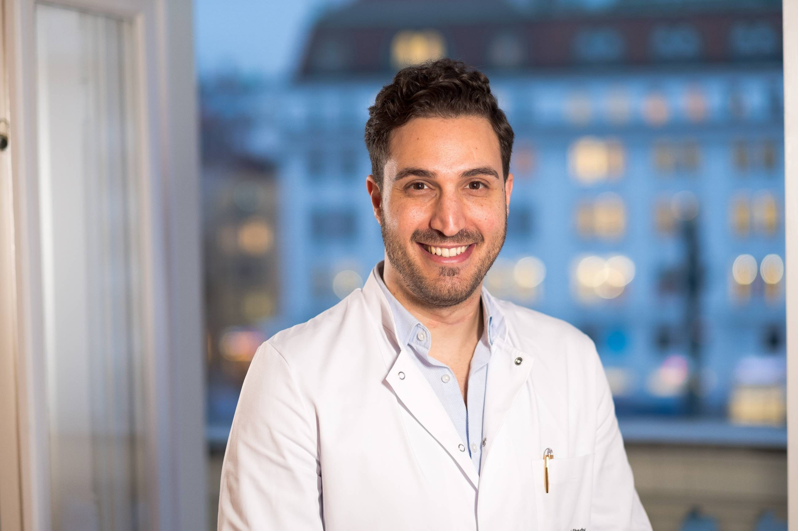

Die Kunst der Gelenkerhaltung
Facharzt für Orthopädie & Traumatologie
Ihr rasches Comeback ist unser Ziel.
Durch den Fokus auf Knie- und Sportverletzungen sowie die spezialisierte Behandlung von Meniskusrissen und Kreuzbandrissen mittels moderner, minimalinvasiver Arthroskopie profitieren PatientInnen in unserer Ordination von der Expertise eines erfahrenen Kniechirurgen in Wien. Dank unseres umfassenden Netzwerks im Herzen Wiens erhalten Sie von der präzisen Diagnostik über die individuelle Therapie bis hin zu maßgeschneiderten Trainings- und Rehabilitationsplänen alles aus einer Hand.
Unser Team kennenlernen →
Spezialisierte Versorgung für Ihre Gelenke
Wir bieten umfassende orthopädische und unfallchirurgische Leistungen mit modernster Technik und höchster Expertise.
Konservative Therapie
Modernste, wissenschaftlich fundierte Behandlungsmethoden – individuell abgestimmt auf Ihre Bedürfnisse
Mehr erfahren →Operative Therapie
Spezialisierte operative Versorgung aller Knieverletzungen – von Kreuzband bis Meniskus – mit modernsten minimalinvasiven Techniken.
Mehr erfahren →Stoßwellentherapie
Hochenergetische Druckwellen aktivieren körpereigene Heilungsprozesse – ganz ohne Operation und Narkose.
Mehr erfahren →Kniechirurg Wien – Lernen Sie Dr. El Marto kennen
KNIECHIRURG & SPORTTRAUMATOLOGE IN WIENOA Dr. med. univ. Shady El Marto zählt zu den erfahrensten Kniechirurgen Wiens. Er ist Facharzt für Unfallchirurgie sowie Facharzt für Orthopädie & Traumatologie und Oberarzt im UKH Lorenz Böhler. Mit über 3.000 Operationen zählt er zu einer der meistempfohlenen Anlaufstellen für Kniebeschwerden in der Region. Seine Wahlarztordination befindet sich im 1. Bezirk, Am Hof 11 – im Herzen der Wiener Innenstadt. Er ist Belegarzt in mehreren Privatspitälern sowie Gründer und Eigentümer des Sports Medical Centers VIENNA und des Med Center Vienna.
OA Dr. Shady El Marto betreut zahlreiche Profisportler sowie sportbegeisterte Menschen mit akuten Beschwerden, jedoch auch weniger aktive Menschen mit chronischen und abnützungsbedingten Veränderungen der Gelenke. Hiermit wird ein breites und vielfältiges Spektrum an Fachwissen und Expertise über den Bewegungsapparat abgedeckt. OA Dr. El Marto ist außerdem FIFA-Sportarzt und hat das FIFA Diploma in Football Medicine erworben, weshalb er für viele Profifußballer als etablierte und empfohlene Anlaufstelle in Wien gilt.
Als Wahlarzt mit direkter KFA-Abrechnung bietet Dr. El Marto Patienten die Möglichkeit, Termine ohne die langen Wartezeiten eines Kassenarztes zu erhalten. Privatpatienten werden direkt abgerechnet; KFA-Versicherte profitieren von einer direkten Kostenübernahme durch den Krankenfürsorgeverband ohne Überweisungsschein und ohne bürokratischen Aufwand.
- Facharzt für Unfallchirurgie
- Facharzt für Orthopädie & Traumatologie
- Oberarzt im UKH Lorenz Böhler
- FIFA-Sportarzt mit FIFA Diploma
- Zertifizierter Notarzt für ganz Österreich
- Zertifizierter Wundmanager
- Belegarzt in der Privatklinik Döbling
- Belegarzt in der ATOMOS Klinik Währing
- Belegarzt im Evangelischen Krankenhaus Wien

Sports Medical Center Vienna
Am Hof 11/9, 1010 Wien
Anfahrt
Öffentliche Garage: Am Hof 1
Öffentliche Anreise:
Linie U1 Stephansplatz
Linie U3 Herrengasse
Linie 2A, Station Habsburgergasse
24/7 Notfallnummer
Wahlarzt & KFA-Vertragsarzt
Termin Buchen →Besuchen Sie uns in Wien
Lernen Sie unsere Ordination im virtuellen Rundgang kennen – und vereinbaren Sie danach ganz einfach Ihren persönlichen Termin.
Ihre Fragen beantwortet
1. Erstgespräch & Diagnose
Beim ersten Besuch erfolgt eine gründliche klinische Untersuchung. Je nach Befund werden bildgebende Verfahren (Röntgen, MRT) veranlasst. Gemeinsam besprechen wir Befund und Diagnose.
2. Therapieplanung
Auf Basis der Diagnose erstellen wir einen individuellen Behandlungsplan – konservativ oder operativ – abgestimmt auf Ihre Lebensweise und Ihre Ziele.
3. Behandlung
Die vereinbarten Maßnahmen werden durchgeführt: ambulante oder stationäre Eingriffe, physikalische Therapie, Infiltrationen oder andere konservative Methoden.
4. Nachsorge & Rehabilitation
Engmaschige Kontrollen, Koordination der Physiotherapie und sportwissenschaftliche Trainingsplanung begleiten Sie bis zur vollständigen Rückkehr in den Alltag oder Sport.
Bei akuten Knieverletzungen, wie einem Kreuzbandriss, Meniskusriss oder Kniefraktur, führen wir die Operation meist innerhalb weniger Tage durch. Bei geplanten Knieeingriffen, etwa dem Einsetzen eines künstlichen Kniegelenks bei fortgeschrittener Kniearthrose, liegt die Wartezeit bei uns deutlich unter dem österreichischen Durchschnitt.
Wir wissen, dass jeder Tag mit Knieschmerzen Ihre Lebensqualität einschränkt. Deshalb organisieren wir für Sie persönlich und so schnell wie möglich den passenden OP-Termin, ohne lange Wartezeiten und bürokratischen Hürden.
Die Rehabilitation nach einer Kreuzbandrekonstruktion dauert in der Regel 6-9 Monate. In den ersten Wochen steht die Wundheilung im Vordergrund, gefolgt von gezielter Physiotherapie. Die Rückkehr zum Sport erfolgt individuell nach ärztlicher Freigabe.
Die Arthroskopie ist ein minimalinvasiver Eingriff, bei dem über kleine Hautschnitte eine Kamera und spezielle Instrumente in das Gelenk eingeführt werden. Dies ermöglicht die Diagnose und Behandlung von Gelenkproblemen mit minimaler Gewebeschädigung und schnellerer Erholung.
Als Wahlarzt und KFA-Vertragsarzt können Sie einen Teil der Behandlungskosten von Ihrer Krankenkasse rückerstattet bekommen. Wir stellen Ihnen eine detaillierte Rechnung aus, die Sie bei Ihrer Versicherung einreichen können.
Ja, wir sind unter unserer Notfallnummer +43 664 328 44 65 rund um die Uhr, 7 Tage die Woche, telefonisch und per WhatsApp erreichbar. Bei akuten Verletzungen bemühen wir uns um schnellstmögliche Terminvergabe.
Kontaktieren Sie uns
Kein langer Warteweg. Erreichen Sie uns direkt – per Telefon, E-Mail oder Online-Buchung.
Nach einer Sportverletzung war ich auf der Suche nach einem erfahrenen Spezialisten, dem ich mich wirklich anvertrauen kann. Mit Dr. El Marto habe ich genau das gefunden. Von der ersten Untersuchung über die Diagnose bis hin zur Operation meines rechten Knies verlief alles reibungslos und auf höchstem medizinischen Niveau. Dr. El Marto nahm sich stets ausreichend Zeit, erklärte jeden Schritt verständlich. Besonders beeindruckt hat mich die Kombination aus fachlicher Kompetenz und Empathie. Ich fühlte mich nicht als Patient, sondern als Mensch wahrgenommen. Das gesamte Team glänzte durch Professionalität, Freundlichkeit und eine hervorragende Betreuung vor, während und nach dem Eingriff. Bereits 6 Wochen nach der Operation konnte ich wieder aktiv zurück in mein sportliches Umfeld.
Ich würde viel mehr Sterne geben!!! Die gesamte Familie wurde schon von Dr. El Marto betreut (OP's, Spritzen, Strom etc.) und wir sind alle sehr zufrieden. Er nimmt sich Zeit, klärt perfekt auf und gibt einem die Möglichkeit sich mit den Fakten für die passende Behandlungsmethode zu entscheiden. Schnelle Hilfe, Organisation der Termine reibungslos und die Mitarbeiter in der Ordi sind sowieso die Besten! Vielen Dank!
Ich habe mich bei Dr. El Marto, dem Kniespezialisten, rundum wohl und bestens betreut gefühlt. Einfühlsam, geduldig und mit viel Zeit für meine Anliegen – alles war perfekt. Dank der hervorragenden Therapie sind meine Knie wieder topfit und ich kann endlich wieder Sport machen! Vielen Dank! Bester Sportarzt bzw. Knieexperte!
Ich bin dankbar, nach meinem Kreuzbandriss in so guten Händen gewesen zu sein. OA Dr. El Marto war vor der OP als auch nach der OP für offene Fragen und Anliegen in Bezug auf die OP sowie die weiteren Behandlungen immer erreichbar und klärte einen darüber sehr gut auf. Kann diesen Arzt nur jedem mit gutem Gewissen weiterempfehlen.
Absolute Empfehlung, vom ersten Telefonat mit der engagierten Dame am Telefon, über den Empfang durch ein junges und dynamisches Team bis hin zu einem absoluten Kniespezialisten Dr. El Marto an der Spitze, der einem vor allem auf Augenhöhe begegnet. Man fühlt sich nicht als Patient sondern als Freund. Als Knieexperte und Sportarzt nimmt sich Dr. El Marto sehr viel Zeit und erklärt einem verständlich was man hat und warum welche Therapien sinnvoll sind. Wenn Kniespezialist, dann Dr. El Marto. Vielen Dank für Alles!
Dr. El Marto hat bereits die halbe Familie und zahlreiche Fußballspieler des SV Wienerberg 1921 erfolgreich operiert und behandelt. Alle waren höchst zufrieden und fühlten sich bestens betreut. Ich selbst wurde bereits zweimal von Dr. El Marto optimal operiert. Organisation, Betreuung, Empathie, Nachbetreuung – alles zu meiner höchsten Zufriedenheit. Keine Komplikationen. Bester Facharzt auf seinem Gebiet. Uneingeschränkt zu empfehlen.
Mir wurde von Dr. El Marto das vordere Kreuzband mit Allograft (Spendersehne) rekonstruiert und bin mehr als zufrieden damit. Da ich auch als OP-Pfleger oft mit ihm zusammenarbeite, darf ich Dr. El Marto nicht nur als Patient, sondern auch im OP-Team direkt an der Front erleben und kann deshalb bezeugen, dass die Expertise, Gewissenhaftigkeit und Genauigkeit, die Dr. El Marto an den Tag legt, ihn zu einem der besten Ärzte macht. 100% Empfehlung für Dr. El Marto und sein Team.
Nachdem ich über einen langen Zeitraum bei Dr. El Marto hinsichtlich einer Meniskus-OP und später nochmals wegen einer Kreuzband-OP in Behandlung war, sind meine Erfahrungen wirklich durchgehend positiv zu bewerten. Während des gesamten Behandlungsprozesses wurde ich sehr gut begleitet, extrem kompetent und auf dem neuesten Stand der medizinischen OP-Technik. Da ich auch Vergleichsmöglichkeiten mit einem anderen Arzt ziehen kann, ist es für mich der beste Orthopäde meiner Verletzungskarriere. Ein großes Dankeschön an Dr. El Marto für die supergelungenen OPs!
Dr. Shady und sein Team sind echt ein Wahnsinn, ich hatte eine Knie-OP die tadellos verlaufen ist, genauso wie die Behandlungen im Anschluss. Kann Dr. Shady und sein Team echt weiterempfehlen.
Shady is the best Dr ever. I'm truly thankful both for my husband (shoulder OP) and me (ligament OP). And the whole staff is just wonderful! Thank you, dears.
OA Dr. El Marto ist für uns der beste Orthopäde!!! Nach Jahren wissen wir endlich, woher die Knieschmerzen meiner Tochter kommen. Er ist extrem kompetent und sehr freundlich, genauso wie sein gesamtes Team! Ich würde jedem, der Schmerzen hat, empfehlen…
Der Dr. El Marto wurde mir von einer Freundin empfohlen, weil er sowohl sie als auch einen Freund am Knie operiert hatte. Beide waren sehr zufrieden. Da mein linkes Knie schon einige Mal operiert wurde, hatte ich grundsätzlich keine Lust mehr auf eine weitere Operation. Doch Dr. El Marto hat mit einem Griff sofort bemerkt, dass ich kein Kreuzband mehr habe, was mit einem MRT abgesichert wurde. Eine Woche später war die Operation, 2 Wochen später konnte ich ohne Krücken gehen. Auch die Nachbehandlung verlief einwandfrei. Ich kann Dr. El Marto nur weiterempfehlen und fühle mich immer sehr wohl in der Praxis.
Die Praxis sehr schön, alle sehr freundlich. Dr. El Marto ist ein super Arzt, erklärt alles ganz genau, und das Wichtigste: ich habe keine Schmerzen mehr dank dem Arzt.
Hat mir sehr geholfen mit meinen Rückenproblemen (Stoßwellentherapie). Terminkoordination für MRT rasch und für die Ordi reibungslos und sehr flexibel. Vielen Dank an das gesamte Team!
Ein sehr kompetenter und einfühlsamer Arzt! Kann man guten Gewissens weiterempfehlen!
Bester Kniespezialist und Unfallchirurg.
Top, Top, Top. Danke für die tolle Betreuung!